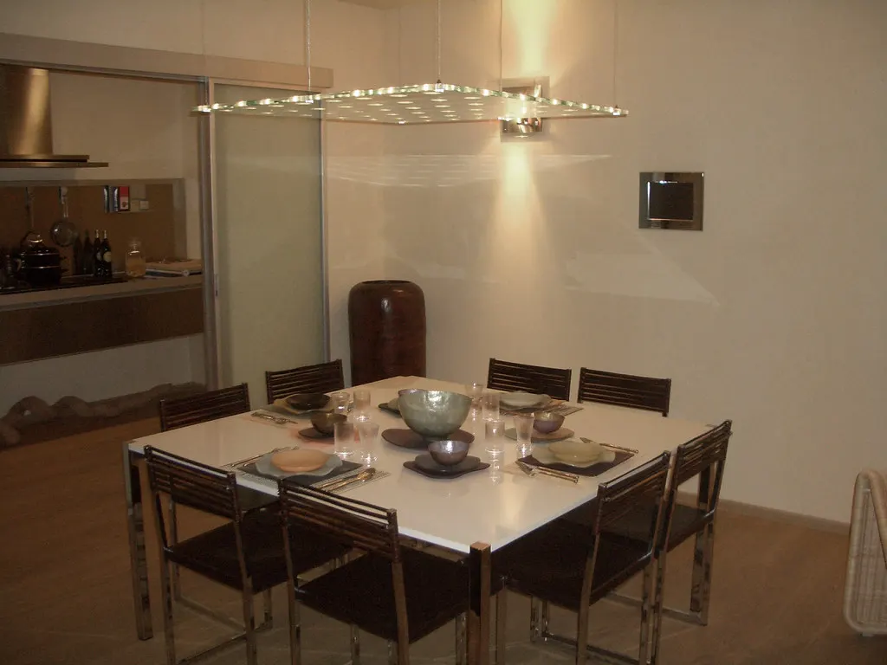

Cala Arquitectura
Mi rol: diseño y desarrollo web completo. Le di presencia virtual desde cero.
Cala necesitaba mostrar su trabajo de reformas e interiorismo con la misma calidez con la que atienden a sus clientes. Diseñé un sitio editorial con galería de proyectos, servicios claros y contacto directo por WhatsApp.
Ver sitio en vivo →